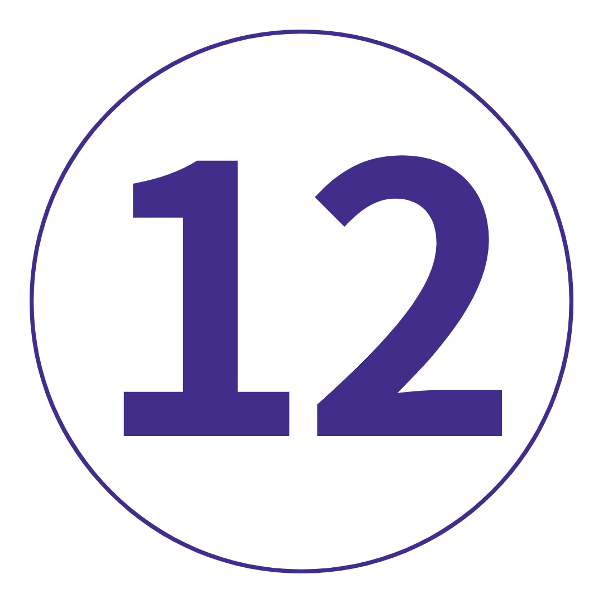

여행 개요
지도
TRIP VIBE = 현지 여행 리더와 함께하는 상징적인 명소와 심도 있는 모험.
이탈리아. 이 나라 생각만 해도 군침이 돌고, 배는 덜덜거리고, 청바지는 더 꽉 조이는 느낌이 든다. 미식의 즐거움은 제쳐두고, 이곳은 양동이로 가득 찬 역사, 마치 포토샵을 한 것 같은 풍경, 가장 냉소적인 사람들조차 너무나 낭만적인 도시가 먹고, 기도하고, 사랑하고,
더 많은 두오모, 교회, 광장의 줄리아 로버츠로 변합니다. 당신이 기억할 수있는 것보다. 그래서 뚱뚱한 바지를 싸십시오. 이번 여행은 이탈리아가 맞습니다.
여행 일정
-
 이탈리아 로마
일상을 뒤로하고 특별한 것을 발견하십시오. 이것은 당신의 궁극적인 이탈리아 모험입니다. 우리는 지역 여행 리더와 함께 모든 도보 여행을 끝내기 위해 도보 여행을 시작하기 전에 벨라 로마에서 갱단과 만날 것입니다. 우리는 몇 시간 동안 논스톱 명소, 관광지를 벗어나 숨겨진 보석, 거의 3000년의 역사에 대해 이야기하고 있습니다. 판테온(Pantheon)을 지나 트레비 분수(Trevi Fountain)에 2센트를 던지고(하지 마세요) 스페인 계단(Spanish Steps)에 앉아 거대한 콜로세움(Colosseum)의 그늘 아래에서 물건을 감습니다. Epic은 심지어 그것을 자르지 않습니다. 그런 다음, 새로 만난 동료와 함께 오늘 저녁 저녁 식사에서 군침이 도는 이탈리아 요리를 즐겨보세요. 바지가 신축성이 있는거 맞죠?
이탈리아 로마
일상을 뒤로하고 특별한 것을 발견하십시오. 이것은 당신의 궁극적인 이탈리아 모험입니다. 우리는 지역 여행 리더와 함께 모든 도보 여행을 끝내기 위해 도보 여행을 시작하기 전에 벨라 로마에서 갱단과 만날 것입니다. 우리는 몇 시간 동안 논스톱 명소, 관광지를 벗어나 숨겨진 보석, 거의 3000년의 역사에 대해 이야기하고 있습니다. 판테온(Pantheon)을 지나 트레비 분수(Trevi Fountain)에 2센트를 던지고(하지 마세요) 스페인 계단(Spanish Steps)에 앉아 거대한 콜로세움(Colosseum)의 그늘 아래에서 물건을 감습니다. Epic은 심지어 그것을 자르지 않습니다. 그런 다음, 새로 만난 동료와 함께 오늘 저녁 저녁 식사에서 군침이 도는 이탈리아 요리를 즐겨보세요. 바지가 신축성이 있는거 맞죠?
키워드 공식 만찬 + 트립 리더와 함께하는 로마 도보여행 바티칸 시국을 포함한 로마
24시간 안에 모든 로마의 휴일 환상을 실현할 수 있습니다. 첫째: 전문 현지 가이드와 함께 포함된 바티칸 시국 투어에서 축복을 세어보세요. 그런 다음: 밖으로 나가서 자신만의 자발적인 일을 하십시오. 현지 팁이 필요하세요? 우리는 당신의 뒤를 가지고 있습니다. 이 지역 젤라테리아의 비하인드 스토리로 가서 무엇이 이 제품을 이렇게 멋지게 만드는지 정확히 알아내세요. 또는 Capitoline Hill을 하이킹하여 포로 로마노와 콜로세움의 멋진 전망을 감상해 보세요. 피자리움 본치(Pizzarium Bonci)에서 한 조각을 위해 점심시간 러시와 싸워보세요. 진실의 입을 사냥하십시오. 또는 단순히 현지인처럼 현지 카페에서 약간의 돌체 파 니엔테(맛있는 나태함)에 탐닉하십시오. 당신은 미식가를 위해 디즈니랜드에 있으므로 오늘 밤 저녁 식사를 찾는 것은 산들 바람이 될 것입니다. 모든 젤라토 맛을 먹어본 것 같나요? Fatamorgana로 향하고 다시 생각하십시오.
바티칸 시국을 포함한 로마
24시간 안에 모든 로마의 휴일 환상을 실현할 수 있습니다. 첫째: 전문 현지 가이드와 함께 포함된 바티칸 시국 투어에서 축복을 세어보세요. 그런 다음: 밖으로 나가서 자신만의 자발적인 일을 하십시오. 현지 팁이 필요하세요? 우리는 당신의 뒤를 가지고 있습니다. 이 지역 젤라테리아의 비하인드 스토리로 가서 무엇이 이 제품을 이렇게 멋지게 만드는지 정확히 알아내세요. 또는 Capitoline Hill을 하이킹하여 포로 로마노와 콜로세움의 멋진 전망을 감상해 보세요. 피자리움 본치(Pizzarium Bonci)에서 한 조각을 위해 점심시간 러시와 싸워보세요. 진실의 입을 사냥하십시오. 또는 단순히 현지인처럼 현지 카페에서 약간의 돌체 파 니엔테(맛있는 나태함)에 탐닉하십시오. 당신은 미식가를 위해 디즈니랜드에 있으므로 오늘 밤 저녁 식사를 찾는 것은 산들 바람이 될 것입니다. 모든 젤라토 맛을 먹어본 것 같나요? Fatamorgana로 향하고 다시 생각하십시오.
키워드 아침밥 + 현지 가이드와 함께하는 바티칸 시국 도보여행
추가 옵션 젤라토 시연 및 시음: €16부터 로마에서 폼페이 경유하여 소렌토로
Topdecker를 출시하십시오! 우리는 Vesuvius 산의 경사면에서 갱단과 함께 전통적인 점심 식사와 와인 시음(obvs)으로 일을 시작합니다. 이것은 살아있는 것입니다. 그런 다음 세계에서 가장 유명한 고대 도시 중 하나인 폼페이(Pompeii)에 잠시 들릅니다. 서기 79년 어느 날 저녁 화산 폭발로 인해 갑자기 묻힌 이 놀라운 유네스코 세계 문화 유산은 고대 역사 애호가의 꿈입니다. 옵션 가이드 투어에서 전문가와 함께 둘러보세요. 고대 포럼, 다채로운 보존 예술품, 폼페이의 돌 남근을 둘러보세요(가이드에게 물어보세요. 감히 부탁드립니다). 나중에 우리는 반짝이는 아말피 해안을 따라 소렌토까지 내려갈 것입니다. 기분을 전환하고 갱단과 함께 현지 레스토랑에서 식사를 한 다음 긴장을 풀고 분위기에 흠뻑 빠져보세요. 네, 드디어 오셨습니다.
로마에서 폼페이 경유하여 소렌토로
Topdecker를 출시하십시오! 우리는 Vesuvius 산의 경사면에서 갱단과 함께 전통적인 점심 식사와 와인 시음(obvs)으로 일을 시작합니다. 이것은 살아있는 것입니다. 그런 다음 세계에서 가장 유명한 고대 도시 중 하나인 폼페이(Pompeii)에 잠시 들릅니다. 서기 79년 어느 날 저녁 화산 폭발로 인해 갑자기 묻힌 이 놀라운 유네스코 세계 문화 유산은 고대 역사 애호가의 꿈입니다. 옵션 가이드 투어에서 전문가와 함께 둘러보세요. 고대 포럼, 다채로운 보존 예술품, 폼페이의 돌 남근을 둘러보세요(가이드에게 물어보세요. 감히 부탁드립니다). 나중에 우리는 반짝이는 아말피 해안을 따라 소렌토까지 내려갈 것입니다. 기분을 전환하고 갱단과 함께 현지 레스토랑에서 식사를 한 다음 긴장을 풀고 분위기에 흠뻑 빠져보세요. 네, 드디어 오셨습니다.
키워드 아침밥 + 점심 + 베수비오 산 경사면에서 와인 시음 및 점심 식사
추가 옵션 역사적인 폼페이 가이드 투어: €20부터 소렌토
누가 단체 여행에는 자유 시간이 없다고 했습니까? 여기 당신이 원하는 무엇이든 할 수 있는 24시간이 있습니다. 가서 받아. 엄청나게 아름다운 카프리 섬으로 페리를 타십시오. 보트 투어를 조직하여 유명한 파란색보다 더 푸른 푸른 동굴을 둘러보세요. 로컬 버스를 타고 그림 같은 포지타노를 탐험하세요. 빌라 코무날레 공원에서 모든 전망을 감상하세요. 또는 단순히 선베드를 끌어 올리고 약간의 광선을 흡수하십시오. 나중에, 당신은 저녁 식사를 위해 침을 흘릴 가치가 있는 창작물을 집어넣는 선택적인 요리 수업에서 내면의 이탈리아식 논나를 전달할 수 있습니다. 힘든 삶입니다. 사실: 여기에서 레몬은 매우 중요하므로 하루가 끝나기 전에 리몬첼로 또는 레몬 젤라토를 맛보십시오.
소렌토
누가 단체 여행에는 자유 시간이 없다고 했습니까? 여기 당신이 원하는 무엇이든 할 수 있는 24시간이 있습니다. 가서 받아. 엄청나게 아름다운 카프리 섬으로 페리를 타십시오. 보트 투어를 조직하여 유명한 파란색보다 더 푸른 푸른 동굴을 둘러보세요. 로컬 버스를 타고 그림 같은 포지타노를 탐험하세요. 빌라 코무날레 공원에서 모든 전망을 감상하세요. 또는 단순히 선베드를 끌어 올리고 약간의 광선을 흡수하십시오. 나중에, 당신은 저녁 식사를 위해 침을 흘릴 가치가 있는 창작물을 집어넣는 선택적인 요리 수업에서 내면의 이탈리아식 논나를 전달할 수 있습니다. 힘든 삶입니다. 사실: 여기에서 레몬은 매우 중요하므로 하루가 끝나기 전에 리몬첼로 또는 레몬 젤라토를 맛보십시오.
키워드 아침밥
추가 옵션 이탈리아 요리 교실 및 저녁 식사: €45부터 소렌토-아시시
카푸치노 내려. 엄마를 위한 레몬 테마 기념품을 골라보세요. 그리고 해안에 작별 인사를 하십시오(지금은). 다음으로? 그림 같은 언덕 위 마을 아시시. 움브리아(이탈리아 중부라고도 함)에 위치한 이곳은 예술, 문화 및 놀라운 자연 경관에 관한 모든 것입니다. 지역 가이드와 함께 성 프란시스 대성당 프레스코화, 로카 마조레 성, 산타 키아라 대성당, 코무네 광장을 둘러보세요. 미네르바 신전을 확인하십시오. 팔라초 델 카피타노 델 포폴로(Palazzo del Capitano del Popolo)를 거닐어 보세요. 그런 다음 지역 와인 바에 가서 좋은 재료를 한 방울(또는 두 방울) 맛보십시오. 오늘 저녁 식사는 우리에게 있습니다. 최고의 팁: 송로버섯으로 무엇이든 시도해 보세요. 이 지역은 송로버섯으로 유명합니다.
소렌토-아시시
카푸치노 내려. 엄마를 위한 레몬 테마 기념품을 골라보세요. 그리고 해안에 작별 인사를 하십시오(지금은). 다음으로? 그림 같은 언덕 위 마을 아시시. 움브리아(이탈리아 중부라고도 함)에 위치한 이곳은 예술, 문화 및 놀라운 자연 경관에 관한 모든 것입니다. 지역 가이드와 함께 성 프란시스 대성당 프레스코화, 로카 마조레 성, 산타 키아라 대성당, 코무네 광장을 둘러보세요. 미네르바 신전을 확인하십시오. 팔라초 델 카피타노 델 포폴로(Palazzo del Capitano del Popolo)를 거닐어 보세요. 그런 다음 지역 와인 바에 가서 좋은 재료를 한 방울(또는 두 방울) 맛보십시오. 오늘 저녁 식사는 우리에게 있습니다. 최고의 팁: 송로버섯으로 무엇이든 시도해 보세요. 이 지역은 송로버섯으로 유명합니다.
키워드 아침밥 + 공식 만찬 + 현지가이드와 함께하는 아시시 도보여행 시에나를 통해 아시시에서 피렌체로
햇빛에 흠뻑 젖고 포도원으로 뒤덮인 토스카나 언덕을 꿈꾸셨습니까? 당신은 운이 좋았습니다 – 우리는 오늘 투스카니의 수도로 향하고 있습니다. 그러나 먼저: 낭만적인 AF 도시 시에나 - 르네상스 건축이 풍부하고 일부 spesh 교회를 자랑하며 유럽에서 가장 큰 중세 광장(유명한 팔리오 경마가 열리는 곳)이 있는 곳입니다. 현지 가이드와 함께 전체 투어를 마친 다음 점심을 위해 현지인을 찾아보세요. 최고의 팁: 이 지역에서 pici라는 파스타를 즐겨보세요. 그때? 우리가 플로렌스에 들어서면서 음식 아기가 노래를 (더 크게) 만들 준비를 하십시오. 누가 노래방이라고 했나요? 기분이 든다면 나중에 술집에서 고전의 대결에 갱단에 합류하십시오.
시에나를 통해 아시시에서 피렌체로
햇빛에 흠뻑 젖고 포도원으로 뒤덮인 토스카나 언덕을 꿈꾸셨습니까? 당신은 운이 좋았습니다 – 우리는 오늘 투스카니의 수도로 향하고 있습니다. 그러나 먼저: 낭만적인 AF 도시 시에나 - 르네상스 건축이 풍부하고 일부 spesh 교회를 자랑하며 유럽에서 가장 큰 중세 광장(유명한 팔리오 경마가 열리는 곳)이 있는 곳입니다. 현지 가이드와 함께 전체 투어를 마친 다음 점심을 위해 현지인을 찾아보세요. 최고의 팁: 이 지역에서 pici라는 파스타를 즐겨보세요. 그때? 우리가 플로렌스에 들어서면서 음식 아기가 노래를 (더 크게) 만들 준비를 하십시오. 누가 노래방이라고 했나요? 기분이 든다면 나중에 술집에서 고전의 대결에 갱단에 합류하십시오.
키워드 아침밥 + 공식 만찬 + 현지 가이드와 함께하는 시에나 도보 여행 피렌체
플로렌스는 빌보 배긴스보다 더 많은 이야기를 가지고 있고, 런던 힙스터보다 더 많은 문화를 가지고 있으며, 세계에 젤라토를 제공했습니다(찬양합니다). 우리는 지역 가이드와 함께 심층 도보 여행을 통해 토지의 위치를 알아낼 것입니다. 그런 다음: 새로 발견한 지식을 가지고 혼자 거리를 누비십시오. 우피치 갤러리입니다. 베키오 다리. 시뇨리아 광장. 두오모. 모든 것을 볼 수는 없지만 시도해 볼 수는 있습니다! 토스카나 언덕을 구르는 꿈을 꾸셨습니까? 덩굴이 무성한 키안티 지역으로 나가 현지 와이너리에서 점심과 와인 시음을 선택적으로 즐길 수 있습니다. 나중에 감사합니다. 오늘 밤, 미켈란젤로 광장(Piazzale Michelangelo)에서 장엄한 일몰을 감상하거나 젤라테리아에서 맛있는 음식을 한 스쿱(또는 두 개) 찾아보세요. 여기에서 발명되었다고 언급했습니다. 맞죠?
피렌체
플로렌스는 빌보 배긴스보다 더 많은 이야기를 가지고 있고, 런던 힙스터보다 더 많은 문화를 가지고 있으며, 세계에 젤라토를 제공했습니다(찬양합니다). 우리는 지역 가이드와 함께 심층 도보 여행을 통해 토지의 위치를 알아낼 것입니다. 그런 다음: 새로 발견한 지식을 가지고 혼자 거리를 누비십시오. 우피치 갤러리입니다. 베키오 다리. 시뇨리아 광장. 두오모. 모든 것을 볼 수는 없지만 시도해 볼 수는 있습니다! 토스카나 언덕을 구르는 꿈을 꾸셨습니까? 덩굴이 무성한 키안티 지역으로 나가 현지 와이너리에서 점심과 와인 시음을 선택적으로 즐길 수 있습니다. 나중에 감사합니다. 오늘 밤, 미켈란젤로 광장(Piazzale Michelangelo)에서 장엄한 일몰을 감상하거나 젤라테리아에서 맛있는 음식을 한 스쿱(또는 두 개) 찾아보세요. 여기에서 발명되었다고 언급했습니다. 맞죠?
키워드 아침밥 + 현지 가이드와 함께하는 피렌체 도보 여행
추가 옵션 키안티 지역의 와인 시음 및 가벼운 점심: €25부터 피렌체에서 루카와 피사를 거쳐 라스페치아로
다른 날, 또 다른 멋진 토스카나 도시. 그 젤라토를 테이크 아웃하십시오. 우리는 성벽 도시 루카로 가는 길을 만들고 있습니다. 이곳은 "숨겨진 보석"의 정의이며 그 이유를 발견할 수 있는 충분한 자유 시간을 갖게 될 것입니다. 그런 다음: 나중에 우리가 La Spezia(일명 Cinque Terre의 관문)를 방문하기 전에 Pisa에서 그 사진을 위해 창의력을 발휘하십시오. 오늘 밤, 저녁 식사가 시작됩니다. 탄수화물 로딩을 시작하십시오. 내일의 모험을 위해 필요할 것입니다.
피렌체에서 루카와 피사를 거쳐 라스페치아로
다른 날, 또 다른 멋진 토스카나 도시. 그 젤라토를 테이크 아웃하십시오. 우리는 성벽 도시 루카로 가는 길을 만들고 있습니다. 이곳은 "숨겨진 보석"의 정의이며 그 이유를 발견할 수 있는 충분한 자유 시간을 갖게 될 것입니다. 그런 다음: 나중에 우리가 La Spezia(일명 Cinque Terre의 관문)를 방문하기 전에 Pisa에서 그 사진을 위해 창의력을 발휘하십시오. 오늘 밤, 저녁 식사가 시작됩니다. 탄수화물 로딩을 시작하십시오. 내일의 모험을 위해 필요할 것입니다.
키워드 아침밥 + 공식 만찬 + 루카 방문 + 피사의 사탑 방문 친퀘테레를 포함한 라스페치아
Cinque Terre의 5개의 절벽 옆 마을들은 공짜로 세계문화유산에 포함되지 않았다. 그리고 각각은 그들만의 분위기를 가지고 있다. 기업 발전은 완전히 불가능하고 별난 일들로 가득 찬 이곳은 라일스 비타가 시행되고 있는 만큼 장려되지 않는 곳이다. 그리고 당신은 그 모든 것을 받아들일 수 있는 완전히 자유로운 날이 있다. 여가 시간을 최대한 활용하기 위한 몇 가지 제안이 필요하십니까? 리오마기오레로 가는 기차를 타서 엽서처럼 완벽한 마리나를 받으십시오. 그런 다음 에스프레소를 따라 내려가서 마나롤라로 하이킹하여 바위들을 간단히 씻어내십시오. 또는 피자를 먹기 위해 코닐리아 언덕 꼭대기 마을로 트레킹을 한 다음, 베르나자로 내려가는 하이킹과 함께 피자를 먹는다고 말했다 – 교회를 확인하고 젤라또를 들고 몬테로소까지 기차로 간다. 선베이크, 수영, 스프릿, 석양을 보고, 스프릿이 더 많다. 그리고 끝나면 라스페지아로 돌아가요. 이건 살아있어. *참고: 걷는 것이 귀사에 가장 적합한 옵션입니까? 그렇지 않다면, 골칫거리는 아껴두고 그냥 기차에 타세요. 당신은 당신이 누군지를 압니다.
친퀘테레를 포함한 라스페치아
Cinque Terre의 5개의 절벽 옆 마을들은 공짜로 세계문화유산에 포함되지 않았다. 그리고 각각은 그들만의 분위기를 가지고 있다. 기업 발전은 완전히 불가능하고 별난 일들로 가득 찬 이곳은 라일스 비타가 시행되고 있는 만큼 장려되지 않는 곳이다. 그리고 당신은 그 모든 것을 받아들일 수 있는 완전히 자유로운 날이 있다. 여가 시간을 최대한 활용하기 위한 몇 가지 제안이 필요하십니까? 리오마기오레로 가는 기차를 타서 엽서처럼 완벽한 마리나를 받으십시오. 그런 다음 에스프레소를 따라 내려가서 마나롤라로 하이킹하여 바위들을 간단히 씻어내십시오. 또는 피자를 먹기 위해 코닐리아 언덕 꼭대기 마을로 트레킹을 한 다음, 베르나자로 내려가는 하이킹과 함께 피자를 먹는다고 말했다 – 교회를 확인하고 젤라또를 들고 몬테로소까지 기차로 간다. 선베이크, 수영, 스프릿, 석양을 보고, 스프릿이 더 많다. 그리고 끝나면 라스페지아로 돌아가요. 이건 살아있어. *참고: 걷는 것이 귀사에 가장 적합한 옵션입니까? 그렇지 않다면, 골칫거리는 아껴두고 그냥 기차에 타세요. 당신은 당신이 누군지를 압니다.
키워드 아침밥 + Cinque Terre 그림 같은 마을을 방문 라스페치아에서 가르다 호수를 거쳐 베니스로
순항 시간 – 우리는 아침에 그림처럼 완벽한 가르다 호수(일명 이탈리아에서 가장 큰 호수)의 표면에서 페리를 타고 보낼 것입니다. 그림 같은 푼타 산 비질리오(Punta San Vigilio) 풍경 속을 떠다니며 가르다(Garda)의 동화 같은 섬과 그림 같은 마을의 문화 유산에 대해 알아보세요. 우리는 나중에 400개가 넘는 다리와 비발디의 발상지인 베니스에 주차할 것입니다. 갱단과의 저녁 식사 후 이 아름다운 침몰하는 도시는 당신의 것입니다. 가서 받아.
라스페치아에서 가르다 호수를 거쳐 베니스로
순항 시간 – 우리는 아침에 그림처럼 완벽한 가르다 호수(일명 이탈리아에서 가장 큰 호수)의 표면에서 페리를 타고 보낼 것입니다. 그림 같은 푼타 산 비질리오(Punta San Vigilio) 풍경 속을 떠다니며 가르다(Garda)의 동화 같은 섬과 그림 같은 마을의 문화 유산에 대해 알아보세요. 우리는 나중에 400개가 넘는 다리와 비발디의 발상지인 베니스에 주차할 것입니다. 갱단과의 저녁 식사 후 이 아름다운 침몰하는 도시는 당신의 것입니다. 가서 받아.
키워드 아침밥 + 공식 만찬 + 가르다 호수의 경치 좋은 크루즈 베니스
수백 년 된 건축물. 독창적인 요리. 그리고 양동이의 문화. 베니스는 탐험을 구걸하고 있습니다. 곤돌라를 타고 대운하를 따라 내려가기 전에 도보 여행에서 베니스의 일반적인 용의자가 누구인지 확인하십시오. 그리고? 나머지는 당신에게 달려 있습니다. 인사이더 팁: 시간을 할애하여 장엄한 Libreria Acqua Alta 서점을 찾거나 Giudecca Island로 여행을 떠나 관광 트레일을 떠나십시오. 방황하십시오. 현지인들과 채팅하세요. 운하와 광장의 미로에서 길을 잃으십시오. 상쾌한 스프레이를 손에 들고 해가 지는 것을 지켜보세요. 그것이 추억을 만드는 것입니다.
베니스
수백 년 된 건축물. 독창적인 요리. 그리고 양동이의 문화. 베니스는 탐험을 구걸하고 있습니다. 곤돌라를 타고 대운하를 따라 내려가기 전에 도보 여행에서 베니스의 일반적인 용의자가 누구인지 확인하십시오. 그리고? 나머지는 당신에게 달려 있습니다. 인사이더 팁: 시간을 할애하여 장엄한 Libreria Acqua Alta 서점을 찾거나 Giudecca Island로 여행을 떠나 관광 트레일을 떠나십시오. 방황하십시오. 현지인들과 채팅하세요. 운하와 광장의 미로에서 길을 잃으십시오. 상쾌한 스프레이를 손에 들고 해가 지는 것을 지켜보세요. 그것이 추억을 만드는 것입니다.
키워드 아침밥 + 여행 리더와 함께하는 베니스 도보여행 + 대운하를 타고 내려가는 곤돌라 오르베이토를 통해 베니스에서 로마로
언덕 위 마을 오르비에토(Orvieto)에서 피트 스톱이 있는 남쪽과 아래쪽 - 웅장한 대성당을 보고 멧돼지 파니니(채식주의자가 아닌 경우)를 파냅니다. 그런 다음: 우리는 la bella Roma로 돌아갈 것입니다. 현지 트라토리아에서 탄수화물로 인한 혼수상태로 진정한 이탈리아식으로 하루를 마무리하세요. 이것은 갱단과의 마지막 저녁 식사이므로이 놀라운 여행을 마땅히 보낼 가치가 있습니다!
오르베이토를 통해 베니스에서 로마로
언덕 위 마을 오르비에토(Orvieto)에서 피트 스톱이 있는 남쪽과 아래쪽 - 웅장한 대성당을 보고 멧돼지 파니니(채식주의자가 아닌 경우)를 파냅니다. 그런 다음: 우리는 la bella Roma로 돌아갈 것입니다. 현지 트라토리아에서 탄수화물로 인한 혼수상태로 진정한 이탈리아식으로 하루를 마무리하세요. 이것은 갱단과의 마지막 저녁 식사이므로이 놀라운 여행을 마땅히 보낼 가치가 있습니다!
키워드 아침밥 + 공식 만찬 + 오르비에토 방문 + 로마 지하철 티켓 로마
진지할 수 없어, 끝났어? 작별인사를 할 시간입니다(울지 않음). 그러나 모험은 여기에서 끝날 필요가 없습니다. 우리는 그리스가 올해의 이맘때 아름답다고 들었습니다..
로마
진지할 수 없어, 끝났어? 작별인사를 할 시간입니다(울지 않음). 그러나 모험은 여기에서 끝날 필요가 없습니다. 우리는 그리스가 올해의 이맘때 아름답다고 들었습니다..
키워드 아침밥
포함된 항목
포함된 경험
숙소
교통
트립 리더와 함께하는 로마 도보 여행
현지 가이드와 함께하는 바티칸 시국 도보 여행
베수비오 산 경사면에서 와인 시음 및 점심 식사
그림 같은 아말피 해안 방문
현지 가이드와 함께하는 아시시의 도보 여행
현지 가이드와 함께하는 시에나 도보 여행
현지 가이드와 함께하는 피렌체 도보 여행
루카 방문
피사를 방문하여 유명한 사탑을 감상하세요.
Cinque Terre의 그림 같은 마을을 방문하십시오.
가르다 호수의 경치 좋은 크루즈
Trip Leader와 함께하는 베니스 도보 여행
대운하를 타고 내려가는 곤돌라
오르비에토 방문
호텔 스타일의 숙박 시설에서 12박(트윈 또는 더블)
에어컨 코치 선택 활동
- 로마에서 젤라또 시연 및 시음: €16부터
- 유서 깊은 폼페이 가이드 투어: €20부터
- Sorrento에서 이탈리아 요리 강습 및 저녁 식사: €45부터
- 키안티 지역에서 와인 시음 및 가벼운 점심: €25부터
투어 동영상, 사진, 리뷰
13 일
2 국가1 인당
US $ 3,209.00 부터
여행 코드: TBIRR2
여행 노트 다운로드-
날짜 및 가격 확인
2022년 4월 4월 17일 일 ~ 4월 29일 금 딥 딥: 이탈리아 2022 US$3,269.00 2022년 5월 5월 1일 일 ~ 5월 13일 금 딥 딥: 이탈리아 2022 US$3,439.00 5월 15일 일 ~ 5월 27일 금 딥 딥: 이탈리아 2022 US$3,439.00 2022년 6월 6월 12일 일 ~ 6월 24일 금 딥 딥: 이탈리아 2022 US$3,549.00 6월 26일 일 ~ 7월 8일 금 딥 딥: 이탈리아 2022 US$3,549.00
여행개요
 밤 식사  최대 인원
최대 인원
시 작 15 : 00 로마 종 료 09 : 00 로마